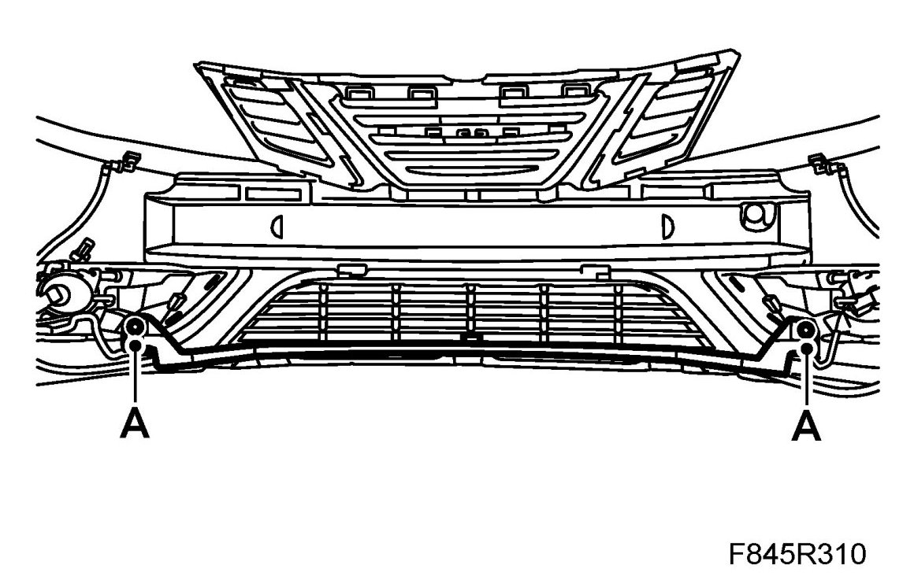
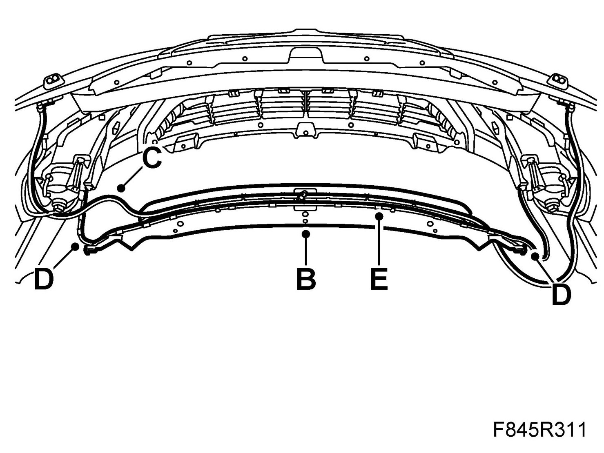
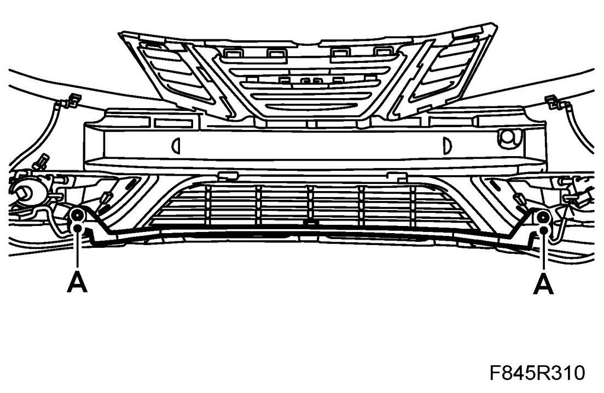

Duct, Wiring Harness, Bumper, Front
Duct, Wiring Harness, Bumper, Front
To remove
1. Raise the car.
2. Remove the front bumper shell.
3. Remove the duct.
- Remove the bolts (A).

- Lift up the duct (B).

- Remove the washer hose (C).
- Remove the clips (D) and the wiring harness (E).
To fit
1. Fit the duct.
- Fit the wiring harness (E) in the rear duct.
- Fit the clips (D).
- Fit the washer hose (C) in the front duct.
- Lift the duct (B) into position so that the locating lugs are positioned correctly.
- Fit the bolts (A).

2. Fit the front bumper shell.
3. Lower the car.